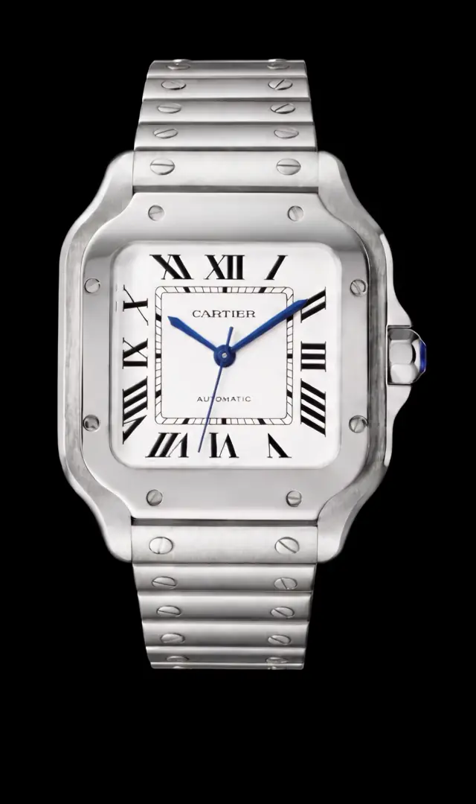

Étape01/ 06
Réception et identification
Nous notons la référence, le numéro de série et le calibre, puis nous photographions la montre sous tous les angles avant d'y toucher.
Authentification
Nous ne revendons rien que nous n'ayons démonté, examiné et confronté à nos références. Voici, étape par étape, comment une montre passe de votre poignet au nôtre, puis au suivant.

Authentification
Nous ne revendons rien que nous n'ayons démonté, examiné et confronté à nos références. Voici, étape par étape, comment une montre passe de votre poignet au nôtre, puis au suivant.
Faites défiler
Étape01/ 06
Nous notons la référence, le numéro de série et le calibre, puis nous photographions la montre sous tous les angles avant d'y toucher.
Étape02/ 06
Boîtier, poinçons, glace, couronne, poussoirs, cadran, aiguilles, bracelet et fermoir sont examinés à la loupe, pièce par pièce.
Étape03/ 06
Un horloger ouvre la montre et vérifie que le mouvement correspond à la référence : calibre, finitions, pièces d'origine.
Étape04/ 06
Le numéro de série est comparé aux registres du marché, et les dates de la boîte et des papiers doivent être cohérentes avec la montre.
Étape05/ 06
Test de pression à la profondeur d'origine, puis contrôle de la marche et de la précision.
Étape06/ 06
Si les douze contrôles sont réussis, la montre est révisée si nécessaire, puis mise en vente avec sa garantie. Sinon, elle n'entre pas dans notre sélection.
Nous notons la référence, le numéro de série et le calibre, puis nous photographions la montre sous tous les angles avant d'y toucher.
Boîtier, poinçons, glace, couronne, poussoirs, cadran, aiguilles, bracelet et fermoir sont examinés à la loupe, pièce par pièce.
Un horloger ouvre la montre et vérifie que le mouvement correspond à la référence : calibre, finitions, pièces d'origine.
Le numéro de série est comparé aux registres du marché, et les dates de la boîte et des papiers doivent être cohérentes avec la montre.
Test de pression à la profondeur d'origine, puis contrôle de la marche et de la précision.
Si les douze contrôles sont réussis, la montre est révisée si nécessaire, puis mise en vente avec sa garantie. Sinon, elle n'entre pas dans notre sélection.
Une montre qui ne passe pas l'ensemble des douze contrôles n'entre jamais dans notre sélection. C'est notre seul critère : la conformité.
24 mois pièces et main-d'œuvre sur l'ensemble de notre sélection, sans condition.
Remis avec chaque montre, il consigne la référence, le numéro de série et la date du contrôle.
Livrée dans un écrin Imperial avec certificat d'authenticité et carnet d'entretien.
Nos horlogers, dans notre atelier. Aucune montre n'est mise en vente sans avoir été ouverte et contrôlée par l'un d'eux.
Un écrin Imperial, un certificat d'authenticité et un carnet d'entretien, avec la garantie de 24 mois pièces et main-d'œuvre.
Elle n'entre pas dans notre sélection. Si vous nous l'avez confiée pour une estimation, nous vous l'expliquons clairement et vous la gardez, sans frais.
L'estimation à distance est gratuite : décrivez votre montre et ajoutez des photos. L'authentification complète a lieu en atelier, une fois l'offre acceptée.